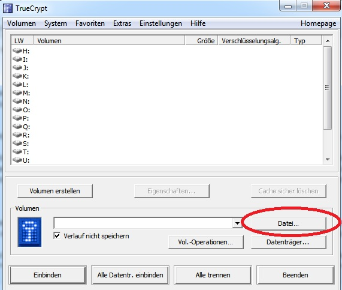
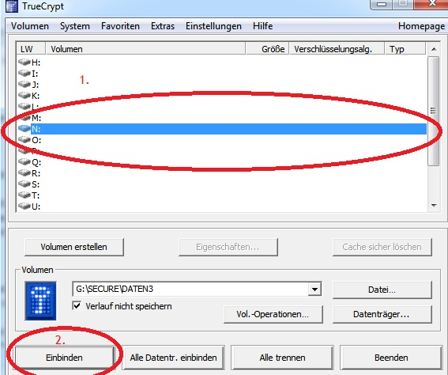
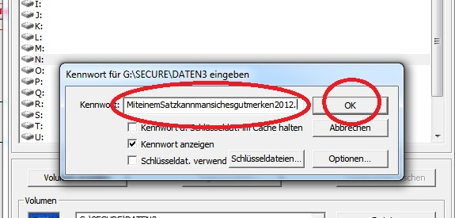
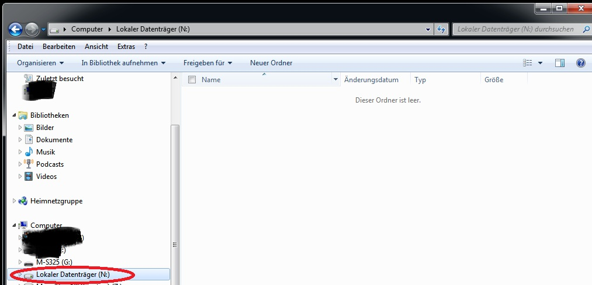
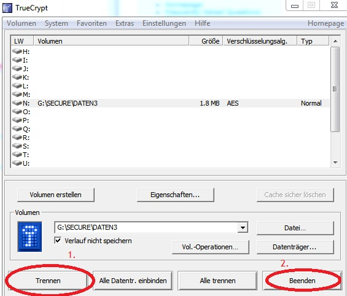

Bedienungsanleitung TrueCrypt
Im vorherigen Artikel haben wir den USB-Stick vorbereitet und einen verschlüsselten Container in Form einer Datei erstellt. Dieser Artikel zeigt in Kurzform, wie man den USB-Stick nun im Alltag manuell benutzt.
Die Datei
TrueCrypt.exeim Ordner Secure auf USB-Stick starten und auf Datei… klicken. Nun die eben erstellte Datei
Datenin Ordner Secure auf USB-Stick wählen und auf Öffnen klicken.
Anschließend einen freien Laufwerksbuchstaben wählen (hier
N:) und auf Einbinden klicken. Das eben erstellte Kennwort bzw. die Passphrase eingeben und auf OK klicken. 
Das war es. Der Container ist nun als Laufwerk N im Windows-Explorer zu finden. Hier kann man nun nach Belieben Dateien kopieren, verändern und löschen.

Laufwerk wieder Trennen
Hat man alles erledigt, schließt man alle Dateien und klickt im TrueCrypt-Fenster zunächst auf Trennen und dann auf Beenden.
Hinweis: Der Trennvorgang kann mehrere Minuten dauern.

Das war es auch schon. Ist doch ganz einfach, oder?
Weil das auf Dauer aber doch immer ein bißchen Mühsam ist, schauen wir uns im nächsten Artikel an, wie man das Einbinden des TrueCrypt-Containers als Windows-Laufwerk deutlich beschleunigen kann. Hierzu erstellen wir ein Batch-Script,… Weiterlesen…